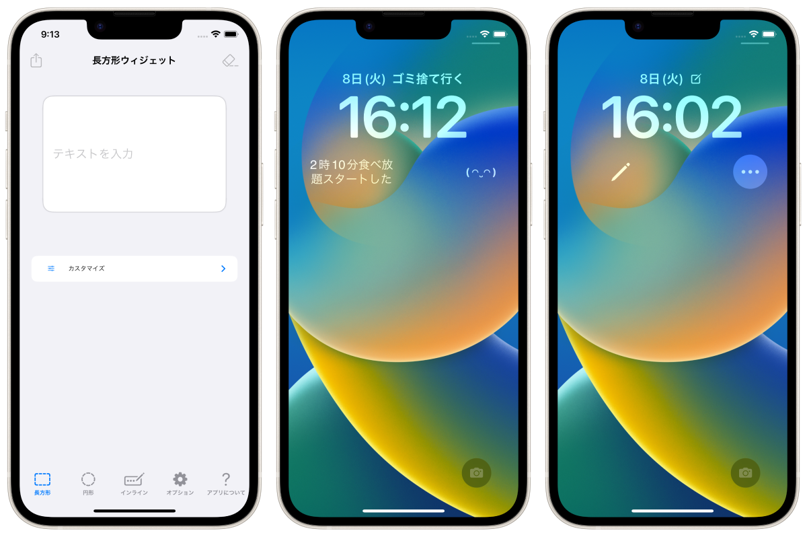
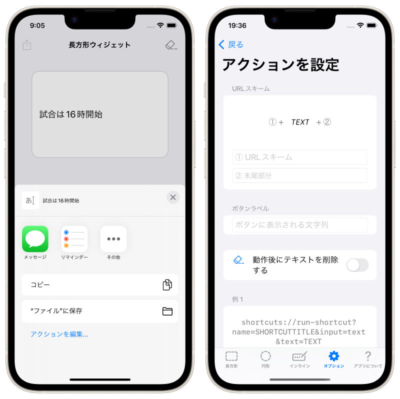

Une application de prise de notes dédiée à la nouvelle fonctionnalité Widget de l'écran de verrouillage d'iOS16, sortie à l'automne 2022 !



Il s'agit d'une application de notes spécialisée dans les widgets d'écran de verrouillage, une application réservée à l'iPhone.
Lorsque vous voulez prendre une note, vous pouvez rapidement écrire une note sur l'écran de verrouillage et vérifier la note sur l'écran de verrouillage à tout moment !
La conception de la note sur l'écran de verrouillage peut être personnalisée de manière flexible, afin que vous puissiez l'utiliser en fonction de vos différents objectifs en matière de "notes à laisser" et d'"affichage de texte sur l'écran de verrouillage".
Appuyez sur le widget pour lancer immédiatement le clavier et modifier la note.



L'iPhone 14 Pro avec Always On Display transforme votre iPhone en votre bloc-notes le plus proche.
Citation : https://www.apple.com/jp/iphone-14-pro/
Gratuit
Cacher les annonces (160 yen)